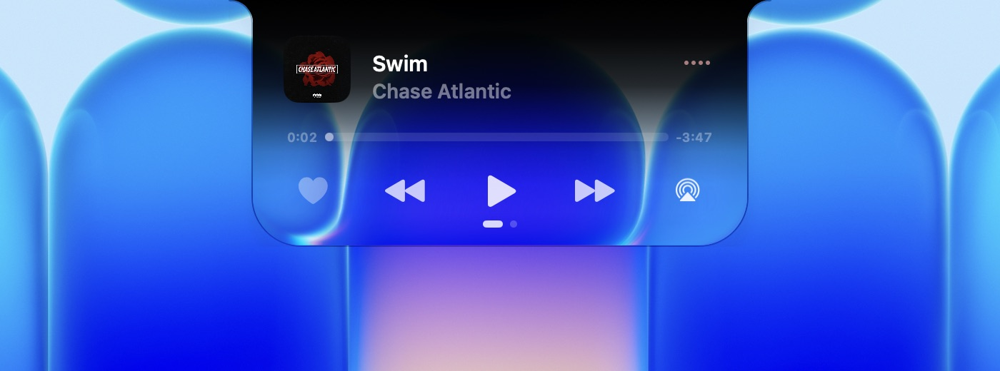
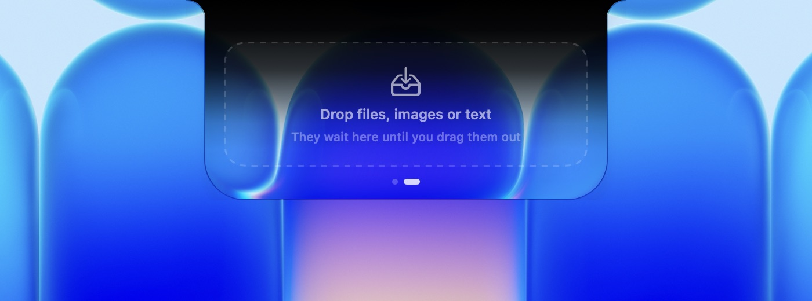
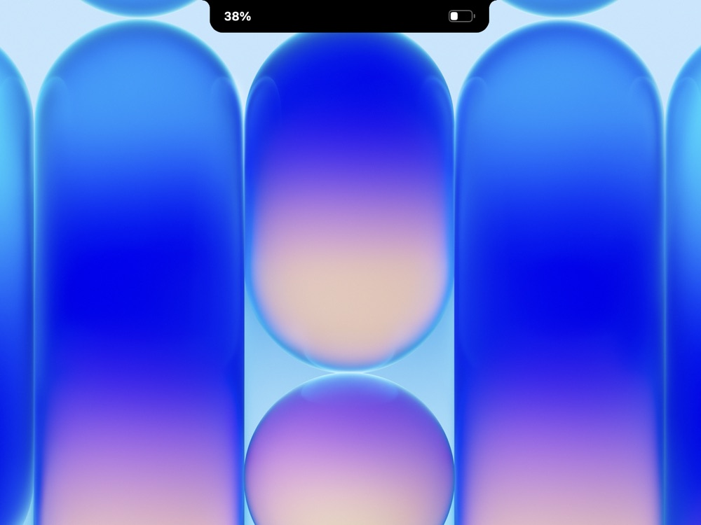
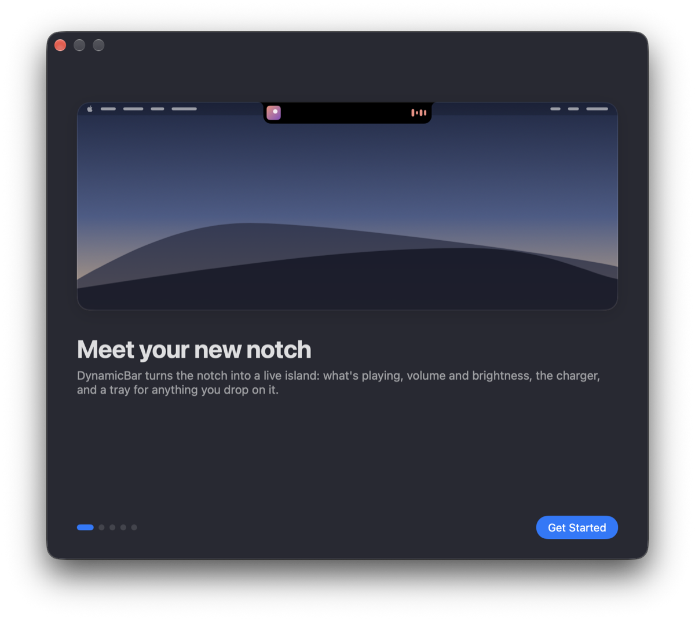
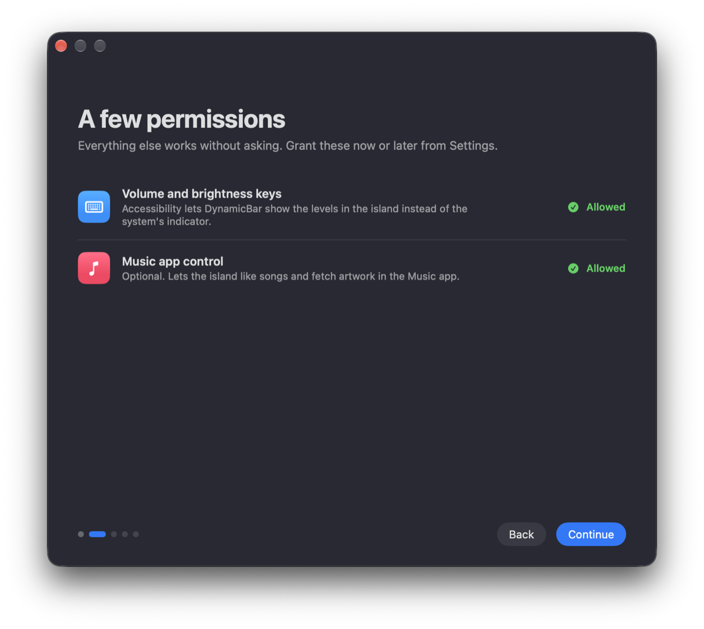
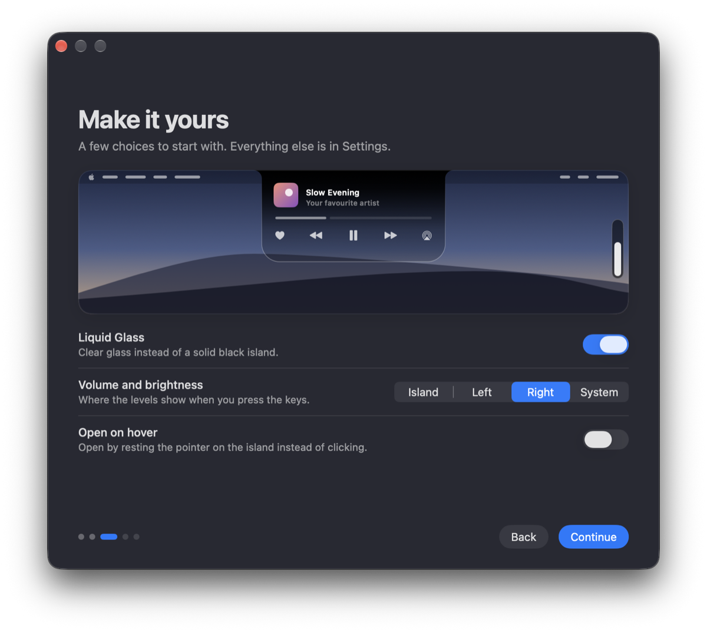
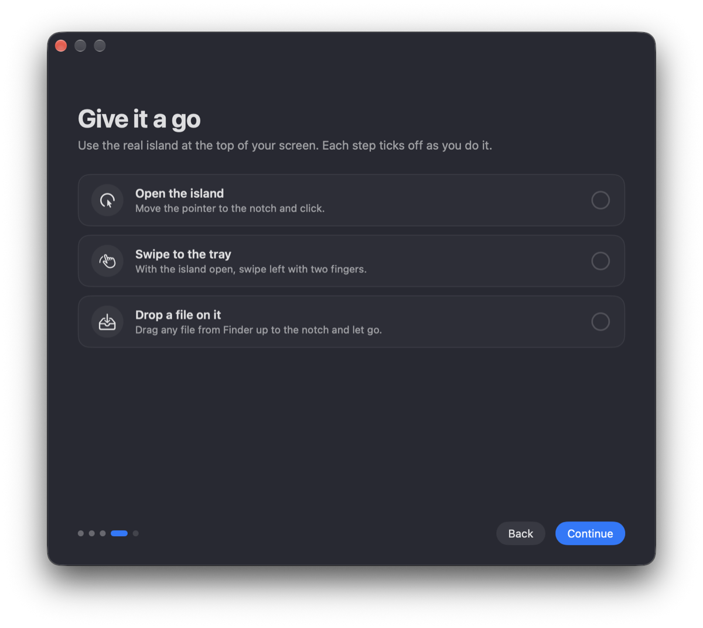
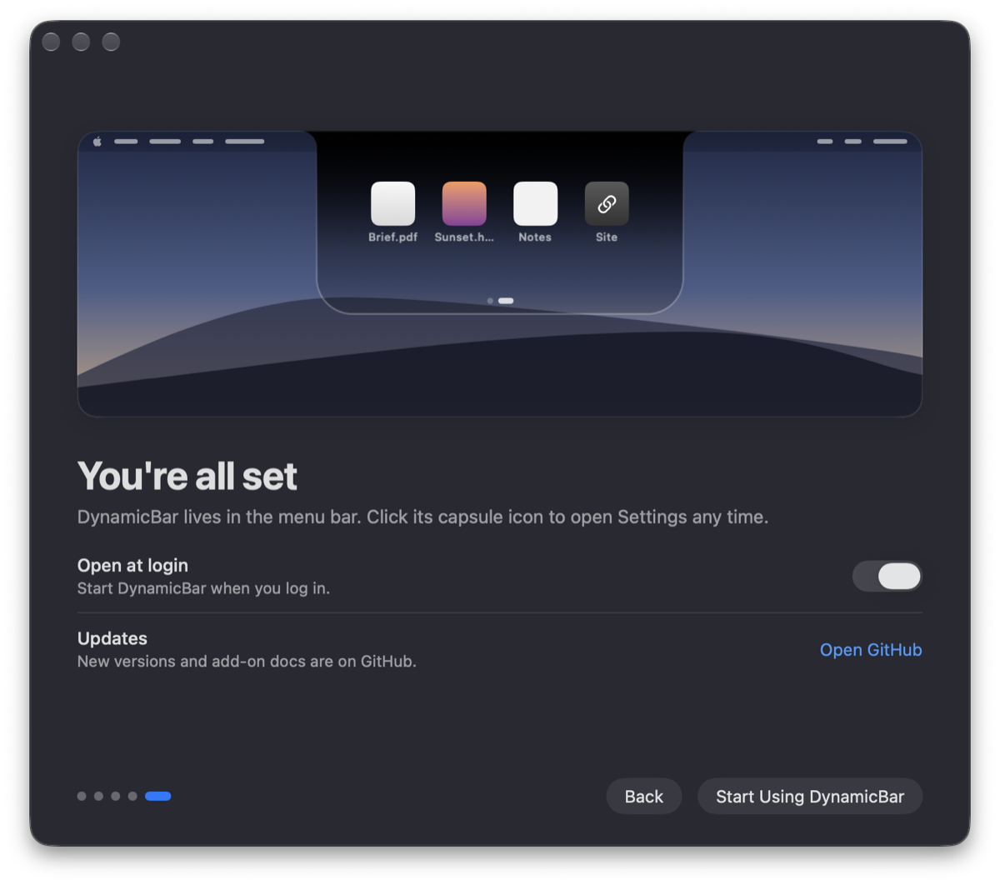

A player in the notch
Artwork, scrubbing, AirPlay and favourites from anything that plays: Music, Spotify, a video in the browser, a podcast.
DynamicBar turns the notch into an island of glass. It shows what's playing, your volume and brightness, the charger, and a tray for anything you drop on it. You can write your own add-ons too.
Free. Needs macOS 26 or later.
Or with Homebrew: brew install --cask kag1o/tap/dynamicbar
Every picture here was captured from the app running on a MacBook. The glass bends whatever is behind it.

Artwork, scrubbing, AirPlay and favourites from anything that plays: Music, Spotify, a video in the browser, a podcast.

Drop files, images, links or text on the island. They wait there until you drag them out. Swipe with two fingers to switch pages.
Press a key and the island stretches to show the level.

The battery level shows beside the notch when you plug in or unplug.
A padlock closes and opens as the screen locks and unlocks.
Prefer the island quiet? Show levels as a pill on the left or right edge of the screen, and drag it to change them.
Clear glass that bends the wallpaper, or solid black like the notch itself. Set the tint anywhere in between.
Each section opens on a small desktop. A miniature island follows every switch as you flip it.
A short welcome asks for two permissions, lets you pick the glass and where levels show, then has you try the real island.

Meet the island
Permissions
Make it yours
Try it
DoneAdd your own pages to the island with a few lines of JavaScript. No build step, no account.
A folder with a manifest and a script. Edit one in the browser and watch the island update as you type.
Describe what you want. Copy a prompt that carries the whole reference and paste it into any AI chat.
Yes. No subscription, no ads, no account, no analytics, and you can use it on a work Mac too. Selling it or using it to make money isn't allowed; see the license on GitHub.
Yes. The island hangs from the middle of the menu bar instead. It looks best on a MacBook with a notch, where it grows out of the cutout.
Anything that reports to macOS Now Playing: Music, Spotify, podcasts, videos in Safari or Chrome. You can limit it to the Music app or turn the player off.
Only to take over the volume and brightness keys, so levels show in the island instead of the system square. Choose “System” in Settings and it never needs it.
Add-ons run inside DynamicBar's JavaScript sandbox. The network, links, media, the clipboard and opening the island each need a permission, shown before you install. Developer Mode stays off until you turn it on.
DynamicBar checks for new versions once a day and asks before installing one. You can check now, or turn the checks off, in Settings › General › Updates. With Homebrew, brew upgrade --cask dynamicbar works too.
DynamicBar isn't notarized by Apple. Close the message, open System Settings › Privacy & Security, scroll down and click Open Anyway. If macOS says the app is damaged, run xattr -cr /Applications/DynamicBar.app in Terminal and open it again.